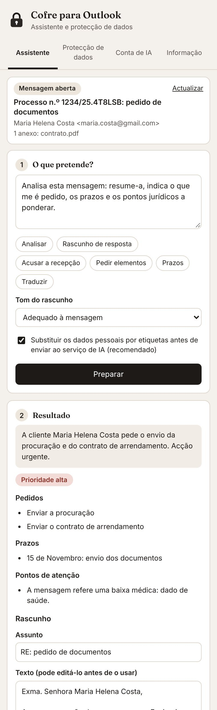

Peça em linguagem corrente
Abra uma mensagem ou um rascunho, escreva o que pretende ou escolha uma sugestão. O Cofre analisa, prepara o rascunho no tom escolhido e só o coloca na resposta quando o pedir. Por exemplo:
- «Analisa esta mensagem: o que me é pedido e quais são os prazos?»
- «Prepara uma resposta a pedir os documentos em falta.»
- «Responde com uma recusa cortês e fundamentada.»
- «Melhora o meu texto, num registo jurídico e cordial.»
- «Traduz esta mensagem para português.»

O que faz
Como adquirir e começar a utilizar
130 €
Licença individual, em pagamento único.
- Envie mensagem a Ana Marta Soares no LinkedIn. Após o pagamento, recebe o código de licença, que começa por COFRE-.
- Instale o Cofre seguindo os passos abaixo.
- No Outlook, abra uma mensagem, abra o Cofre, cole o código e seleccione Activar.
- Para usar o assistente, ligue a sua conta Cloudflare gratuita seguindo os passos abaixo (cerca de cinco minutos, uma única vez). A protecção de dados funciona sem esta conta.
Instalação em dois minutos
O Cofre para Outlook funciona no Outlook na Web, no novo Outlook, no Outlook clássico para Windows (Microsoft 365 ou Outlook 2021 e posteriores) e no Outlook para Mac, com contas Microsoft 365, Outlook.com e Hotmail. Basta instalá-lo uma vez: fica disponível em todos os computadores em que use a mesma conta.
Descarregar o ficheiro do suplemento
- Descarregue o ficheiro do suplemento, cofre-outlook-manifest.xml.
- Abra aka.ms/olksideload e, se lhe for pedido, inicie sessão com a sua conta de correio. Abre-se a janela dos suplementos do Outlook.
- Seleccione Os meus suplementos e, no fim da lista, em Suplementos personalizados, seleccione Adicionar um suplemento personalizado e depois Adicionar a partir de ficheiro.
- Indique o ficheiro descarregado e confirme com Instalar.
- Descarregue o ficheiro do suplemento.
- No Outlook, no separador Base, seleccione Obter Suplementos (ou Todas as Aplicações, consoante a versão).
- Seleccione Os meus suplementos e, em Suplementos personalizados, seleccione Adicionar um suplemento personalizado e depois Adicionar a partir de ficheiro.
- Indique o ficheiro descarregado e confirme com Instalar.
Nos escritórios com Microsoft 365, o administrador pode instalar o suplemento para todos os utilizadores de uma só vez:
- Descarregue o ficheiro do suplemento.
- No Centro de administração do Microsoft 365, abra Definições > Aplicações integradas > Carregar aplicações personalizadas, escolha Suplemento do Office e carregue o ficheiro.
- Indique os utilizadores ou grupos abrangidos e conclua.
Ligar a conta de IA
O assistente usa o serviço de IA da Cloudflare. Ao ligar uma conta sua, gratuita, passa a dispor de uma quota diária só para si, sem qualquer custo e sem cartão de crédito. O procedimento demora cerca de cinco minutos e só se faz uma vez. A protecção de dados funciona sem esta ligação.
- Criar a conta. Abra dash.cloudflare.com/sign-up, indique o seu endereço de correio electrónico e uma palavra-passe e confirme a conta através da mensagem que recebe.
- Abrir o Workers AI. No painel da Cloudflare, no menu da esquerda, abra AI e depois Workers AI. Seleccione Use REST API.
- Copiar o identificador da conta. Em Get Account ID, copie o código Account ID.
- Criar o token. Seleccione Create a Workers AI API Token, depois Create API Token, e copie o token com Copy API Token. Guarde-o, porque a Cloudflare só o mostra uma vez.
- Ligar a conta no Cofre. No painel do Cofre para Outlook, abra o separador Conta de IA. Cole o Account ID no primeiro campo e o token no segundo e seleccione Guardar e testar. O Cofre confirma a ligação.
Perguntas frequentes
Como responder a e-mails com IA no Outlook sem expor dados de clientes?
Com o Cofre para Outlook, abra a mensagem, escolha «Rascunho de resposta» e seleccione «Preparar». Antes do envio ao serviço de IA, os dados pessoais são substituídos por etiquetas, que são repostas no seu computador quando o rascunho chega.
Funciona no Mac, no Windows e no Outlook na Web?
Sim: no Outlook na Web, no novo Outlook, no Outlook clássico para Windows (Microsoft 365 ou Outlook 2021 e posteriores) e no Outlook para Mac, com contas Microsoft 365, Outlook.com e Hotmail. Instalado uma vez, fica disponível em todas as versões com a mesma conta.
Os dados são enviados para algum servidor?
A verificação e a anonimização decorrem inteiramente no computador. O assistente envia ao serviço de IA da conta Cloudflare do próprio utilizador apenas a mensagem ou o rascunho em causa, com os nomes, os endereços de correio electrónico, os contactos, os NIF e os demais dados pessoais substituídos por etiquetas, que são repostas no computador quando a resposta chega.
O assistente envia mensagens por mim?
Não. O Cofre prepara o rascunho e coloca-o na resposta apenas quando o utilizador o pede; o envio é sempre feito pelo utilizador, depois de rever o texto.
Porque é preciso uma conta Cloudflare?
O assistente usa um modelo de IA na nuvem. Com a conta Cloudflare gratuita do próprio utilizador, a quota diária é só sua, sem custos e sem cartão de crédito. Os passos estão descritos nesta página, na secção «Ligar a conta de IA».
Quanto custa o Cofre para Outlook?
A licença individual custa 130 €, em pagamento único, e é adquirida a Ana Marta Soares.